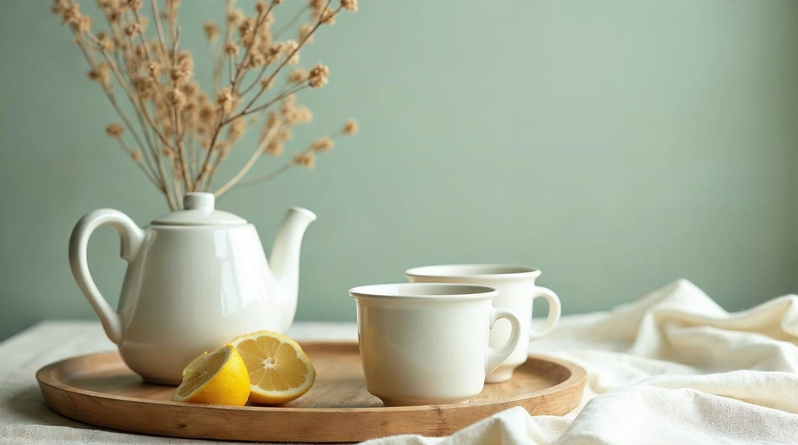
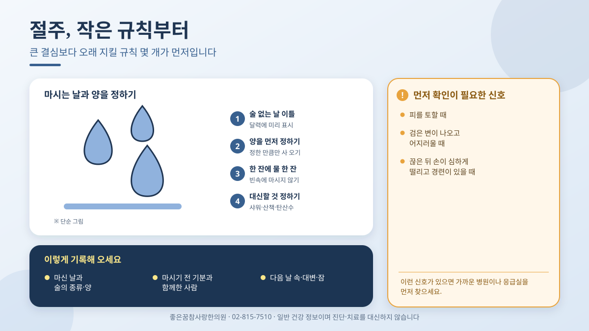

이종호 한의사 감수좋은꿈참사랑한의원 대표원장 (한의사 면허번호 19769)발행 2026-11-26 · 수정 2026-11-26
이 글의 차례
퇴근길 편의점 앞에서 걸음이 느려집니다. 오늘은 그냥 들어가자고 마음먹었는데, 냉장고 문 앞에 서면 손이 먼저 캔을 집습니다. 한 캔만 마시려던 것이 두 캔이 되고, 다음 날 아침에는 몸이 무겁고 속이 쓰립니다. 그리고 또 다짐합니다. 이번 주는 진짜 줄여 보자고요.
진료실에서 술 이야기를 꺼내면 많은 분이 조금 머쓱한 표정을 지으십니다. 많이 마시는 편은 아니라고 하시면서도, 매일 조금씩, 혹은 주말에 몰아서 마시는 습관이 오래 이어져 온 경우가 많습니다. 건강검진에서 간 수치나 중성지방 이야기를 듣고 나서야 마음이 쓰이기 시작하셨다고도 하십니다.
저는 술을 당장 끊으라고 말씀드리기보다, 지금 어떻게 마시고 있는지를 먼저 함께 들여다보자고 합니다. 언제, 누구와, 얼마나, 왜 마시는지를 알면 줄일 수 있는 자리가 보이기 때문입니다.
절주는 한 번의 큰 결심보다 작은 규칙 몇 개를 오래 지키는 쪽이 성공하기 쉽습니다. 오늘 글에서는 술이 몸에 어떤 흔적을 남기는지, 그리고 줄이는 과정을 어떻게 시작하고 이어 가면 좋을지를 정리해 보겠습니다.
나는 얼마나 마시고 있을까요
술을 줄이려면 먼저 지금 얼마나 마시는지를 정확히 아는 것이 출발점입니다. 그런데 막상 적어 보면 생각보다 많이 마시고 있었다고 놀라는 분이 많습니다. 한 잔, 두 잔이라는 기억은 실제보다 적게 남는 경우가 흔하기 때문입니다.
일주일 동안 마신 날과 양을 그대로 적어 보세요. 소주는 병과 잔으로, 맥주는 캔 크기로, 와인은 잔으로 적으면 됩니다. 마신 시각, 함께한 사람, 마시기 전의 기분까지 적어 두면 줄일 자리를 찾는 데 큰 도움이 됩니다.
- 일주일에 술을 마시는 날이 사흘을 넘나요?
- 한 번 마시면 처음 정한 양보다 더 마시게 되나요?
- 잠들기 위해 술을 찾는 날이 있나요?
- 술을 마시지 않은 날 오히려 불안하거나 잠이 안 오나요?
- 가족이나 가까운 사람이 술 이야기를 꺼낸 적이 있나요?
이 질문 가운데 여러 개에 해당한다면 지금이 습관을 다시 짜 볼 좋은 때입니다. 스스로를 탓하기보다, 바꿀 수 있는 자리를 찾는다는 마음으로 보시면 됩니다.
왜 술은 줄이려 해도 다시 늘어날까요
술은 마시는 순간 긴장을 풀어 주고 기분을 가볍게 해 줍니다. 하루가 고단했던 날, 그 빠른 위로는 무척 달콤합니다. 문제는 이 위로에 몸이 익숙해지면 같은 느낌을 얻기 위해 조금씩 더 많은 양이 필요해진다는 점입니다.
술과 짝지어진 상황도 큰 몫을 합니다. 퇴근 뒤 저녁 식사, 주말 축구 경기, 혼자 보는 드라마처럼 술이 늘 함께하던 순간이 오면 몸이 먼저 기대합니다. 그래서 의지만으로 버티려 하면 그 순간마다 싸워야 하니 금방 지치게 됩니다.
잠도 얽혀 있습니다. 술을 마시면 잠은 빨리 들지만 새벽에 자주 깨고 깊이 자지 못합니다. 다음 날 피곤하니 저녁에 다시 술로 긴장을 풀고 싶어지는 고리가 생깁니다. 이 고리를 알아차리는 것만으로도 줄이는 일이 한결 수월해집니다.
한의학에서는 술을 열과 습을 함께 만드는 것으로 설명하곤 합니다. 얼굴이 쉽게 붉어지고 입이 마르며 대변이 묽고 끈적한 분, 몸이 무겁고 잘 붓는 분처럼 같은 술을 마셔도 몸에 남는 모습이 달라서 진찰에서는 그 차이를 함께 봅니다.
술이 당기는 마음을 들여다보면
술을 찾는 마음 아래에는 대개 다른 이름의 마음이 있습니다. 하루 종일 긴장했던 몸을 풀고 싶은 마음, 혼자인 저녁이 허전한 마음, 잠이 오지 않을까 걱정되는 마음, 화가 났지만 말하지 못한 마음 같은 것들입니다.
그 마음을 알아차리면 술 말고 다른 방법을 찾을 수 있습니다. 긴장을 풀고 싶었다면 따뜻한 물로 오래 씻는 것, 허전했다면 친구에게 전화 한 통, 잠이 걱정이었다면 잠자리 준비를 일찍 시작하는 것처럼요. 처음에는 어색해도 몇 번 반복하면 몸이 새 순서에 익숙해집니다.
기분이 몇 주째 가라앉아 있고 술로 그 기분을 달래는 날이 늘었다면, 술보다 마음을 먼저 살펴야 할 때일 수 있습니다. 이런 경우에는 정신건강의학과 상담을 함께 받아 보시길 권합니다. 마음이 가벼워지면 술을 찾는 횟수도 자연스럽게 줄어드는 경우가 많습니다.

술이 몸에 남기는 흔적
술은 간에서 대부분 처리됩니다. 간은 꽤 오래 참을성 있게 일하는 장기라서, 수치가 오르기 전까지는 별다른 느낌이 없는 경우가 많습니다. 그래서 건강검진의 간 수치는 몸이 보내는 조용한 신호로 받아들이시는 것이 좋습니다.
위와 장도 술의 영향을 받습니다. 술을 마신 다음 날 속이 쓰리고, 변이 묽어지고, 배가 살살 아픈 일이 잦다면 위장이 쉬지 못하고 있다는 뜻일 수 있습니다. 안주로 기름지고 짠 음식을 함께 드시는 습관도 부담을 더합니다.
혈압과 혈당, 중성지방도 함께 움직입니다. 특히 달달한 술이나 늦은 밤 안주는 중성지방과 체중에 그대로 반영되기 쉽습니다. 술을 줄였더니 혈압과 아침 붓기가 먼저 달라졌다고 말씀하시는 분도 계십니다.
술을 줄이면 무엇이 먼저 달라질까요
술을 줄인 뒤 가장 먼저 느끼는 변화는 아침입니다. 자고 일어났을 때 머리가 덜 무겁고, 얼굴과 손의 붓기가 덜하며, 속이 편하다고 말씀하시는 분이 많습니다. 저녁 시간이 길어져 미뤄 두었던 일을 하게 되었다는 분도 계십니다.
몇 주가 지나면 잠의 질과 대변 상태, 체중의 흐름이 조금씩 달라지는 것을 느끼실 수 있습니다. 물론 사람마다 속도는 다르고, 다른 생활 습관도 함께 영향을 줍니다. 눈에 띄는 변화가 늦게 오더라도 실망하지 마시고 기록을 이어 가 보세요.
술값과 안주값이 줄어든 만큼을 따로 모아 두는 분도 계십니다. 한 달 뒤 모인 금액을 보면 생각보다 커서 놀라고, 그 돈으로 운동화나 좋아하는 일을 위한 무언가를 마련하며 스스로를 칭찬해 주는 것도 좋은 방법입니다.
절주와 금주는 무엇이 다른가요
절주는 마시는 날과 양을 정해 두고 그 안에서 지키는 것이고, 금주는 아예 마시지 않는 것입니다. 많은 분께는 절주가 시작하기 쉬운 첫걸음이 됩니다. 다만 간 질환이나 특정 약 때문에 담당 선생님이 금주를 권하셨다면 그 판단을 따르셔야 합니다.
오랫동안 매일 많은 양을 드셨던 분이 갑자기 술을 끊으면 손 떨림, 식은땀, 심한 불안 같은 불편이 생길 수 있습니다. 이런 경우에는 혼자 끊기보다 내과나 정신건강의학과에서 상의하며 줄여 가시는 것이 안전합니다.
모임과 회식이 잦은 시기에는
연말이나 명절, 인사철처럼 모임이 몰리는 시기에는 절주 계획이 흔들리기 쉽습니다. 이런 때는 모든 자리에서 완벽하게 지키려 하기보다, 꼭 가야 할 자리와 줄일 수 있는 자리를 미리 나눠 보세요. 일주일에 술자리를 몇 번까지 갈지 정해 두는 것만으로도 흐름이 달라집니다.
술자리 전에 가볍게 식사를 하고 가면 빈속에 급하게 마시는 일이 줄어듭니다. 자리에서는 물이나 탄산수를 곁에 두고 번갈아 마시며, 2차는 정중히 사양하는 연습을 해 두세요. 귀가 시각을 미리 정해 두면 늦게까지 이어지는 술자리를 피하기 쉽습니다.
술자리 다음 날에는 따뜻한 국물보다 싱겁고 부드러운 죽이나 밥과 채소로 속을 달래고, 물을 자주 나눠 드시길 권합니다. 다음 날 해장술은 몸이 쉬어야 할 시간을 다시 빼앗으니 피하시는 것이 좋습니다.
먼저 이렇게 여쭙니다
처음 오시면 저는 대략 이런 순서로 여쭙니다. 미리 생각해 오시면 이야기가 훨씬 수월해집니다.
- 일주일에 며칠, 한 번에 어느 정도 드시나요?
- 주로 언제, 누구와, 어떤 기분일 때 드시나요?
- 술을 마신 다음 날 속, 대변, 잠은 어떠신가요?
- 건강검진에서 간 수치나 혈당, 혈압 이야기를 들으셨나요?
- 담배, 커피, 야식은 어느 정도 하시나요?
- 함께 드시는 약이나 영양제가 있나요?
정확한 숫자가 기억나지 않아도 괜찮습니다. 지난 일주일을 떠올리며 대략적인 흐름만 이야기해 주셔도 충분합니다.
일상에서 먼저 해 볼 수 있는 것
절주는 규칙을 작게, 구체적으로 정할수록 오래갑니다. 아래 가운데 두세 가지만 골라 이번 주부터 시작해 보세요.
- 일주일에 술 마시지 않는 날을 이틀 이상 정해 달력에 표시하기
- 마시는 날에는 처음부터 양을 정하고, 그만큼만 사 오기
- 술 한 잔마다 물 한 잔을 함께 마시기
- 빈속에 마시지 않고, 안주는 두부·채소·생선처럼 가벼운 것으로 고르기
- 잠들기 직전 혼술은 피하고, 마신다면 잠들기 몇 시간 전에 마치기
- 퇴근 뒤 술이 당기는 시간에 샤워, 산책, 탄산수처럼 대신할 것을 정해 두기
집에 술을 쌓아 두지 않는 것도 생각보다 큰 차이를 만듭니다. 냉장고를 열 때마다 눈에 보이면 그만큼 자주 마음이 흔들립니다. 마시고 싶을 때 한 번 더 나가서 사 와야 한다면 그 사이에 마음을 돌릴 틈이 생깁니다.
모임 자리에서는 미리 정한 양을 주변에 가볍게 알려 두면 권유를 거절하기가 쉬워집니다. 운전, 다음 날 일정, 건강검진 같은 이유를 하나 준비해 두는 분도 계십니다. 잔을 비우지 않고 조금 남겨 두면 계속 채워지는 일이 줄어듭니다.
술을 줄인 처음 몇 주는 잠이 오히려 얕다고 느끼실 수 있습니다. 술 없이 잠드는 리듬을 몸이 다시 익히는 과정입니다. 잠드는 시각을 일정하게 맞추고 저녁 커피를 줄이면 그 기간을 지나기가 한결 편합니다.
한의원에서 함께 살필 수 있는 경우
- 술을 줄이면서 잠이 얕고 자주 깨는 날이 이어지는 경우
- 술을 마신 다음 날 속쓰림, 묽은 변, 더부룩함이 잦은 경우
- 얼굴로 열이 오르고 입이 마르며 몸이 무겁고 잘 붓는 경우
- 술 생각이 나는 저녁마다 마음이 초조하고 긴장되는 경우
- 술을 줄이며 체중과 식사 리듬을 함께 정리하고 싶은 경우
좋은꿈참사랑한의원에 오시면 모든 분의 맥을 먼저 짚고, 잠, 소화, 대변, 붓기와 열감을 여쭤 지금 몸이 어디에서 가장 힘들어하는지 함께 찾습니다.
진찰한 내용을 바탕으로 생활에서 바꿔 볼 규칙 하나와 함께 침, 한약 상담 가운데 지금 상태에 맞는 것을 정합니다. 한약을 상의할 때는 드시는 약과 간 수치를 확인하고 신중하게 정합니다. 처방받은 약은 상의 없이 멈추지 않습니다.
간 수치가 많이 높거나 지방간, 혈당 이야기를 들으셨다면 내과 진료와 정기 검사를 함께 이어 가시길 권합니다. 한의원 진료는 그 사이의 잠과 속, 몸의 무거움을 함께 살피는 자리라고 생각해 주시면 됩니다.
가족이 함께 도와주시면 절주는 훨씬 수월해집니다. 집에서 술을 권하지 않고, 저녁 식탁에 술 대신 따뜻한 차나 탄산수를 올려 두는 작은 배려가 큰 힘이 됩니다. 잘 지킨 주에는 서로 가볍게 칭찬해 주세요.
이렇게 기록해 오시면 상담이 쉬워집니다
2주 정도만 짧게 적어 보세요. 마시지 않은 날을 적는 것도 마신 날만큼 중요합니다.
- 마신 날과 술의 종류, 양
- 마시기 전의 기분과 함께한 사람
- 잠든 시각, 깬 시각, 밤에 깬 횟수
- 다음 날 아침 속, 대변, 몸의 무거움
- 술 생각이 났지만 넘긴 날과 그 방법
기록을 나란히 놓고 보면 술이 늘어나는 요일과 상황이 보이기 시작합니다. 그 자리에 다른 것을 먼저 놓아두는 것이 다음 걸음이 됩니다.
줄여 가는 길은 한 걸음씩
계획보다 많이 마신 날이 있어도 괜찮습니다. 그날 무엇이 나를 흔들었는지 돌아보고 다음 주 규칙에 반영하면 됩니다. 한 번 넘쳤다고 다 포기하는 것이 가장 아쉬운 일입니다.
술을 줄인 몇 주 뒤, 아침이 가벼워지고 속이 편해졌다는 말씀을 듣는 것은 진료실에서 늘 반가운 일입니다. 이번 주에는 술 마시지 않는 날 이틀만 정해 보세요. 다음에 오시면 그 이틀이 어땠는지부터 함께 이야기해 보겠습니다.
이런 증상은 먼저 확인이 필요합니다
- 피를 토하거나 짜장처럼 검은 변이 나오고 어지러운 경우
- 술을 끊은 뒤 손이 심하게 떨리고 헛것이 보이거나 경련이 있는 경우
이런 신호가 있으면 한의원보다 가까운 병원이나 응급실을 먼저 찾으세요.
함께 읽으면 좋은 글
- 저녁 식사와 술은 잠에 어떤 영향을 주나요?
- 한약을 먹는 중인데 연말 회식이 줄줄이 잡혔다면 술은 어떻게 해야 하나요?
- 연말에 한 주에 회식이 세 번이면 속을 어떻게 쉬게 하나요?
- 위내시경에서 만성 위염이라는 말을 들었을 때 무엇을 알아두고 어떻게 살피나요?
- 술을 마신 다음 날에도 한의원 진료를 받아도 되나요?

여쭙는 것
- 일주일에 며칠, 한 번에 어느 정도 드시나요?
- 주로 언제, 누구와, 어떤 기분일 때 드시나요?
- 술을 마신 다음 날 속, 대변, 잠은 어떠신가요?
생활에서 해 볼 것
- 일주일에 술 마시지 않는 날을 이틀 이상 정해 달력에 표시하기
- 마시는 날에는 처음부터 양을 정하고, 그만큼만 사 오기
- 술 한 잔마다 물 한 잔을 함께 마시기
한의원에서 함께 살필 것
- 술을 줄이면서 잠이 얕고 자주 깨는 날이 이어지는 경우
- 술을 마신 다음 날 속쓰림, 묽은 변, 더부룩함이 잦은 경우
- 얼굴로 열이 오르고 입이 마르며 몸이 무겁고 잘 붓는 경우
먼저 확인이 필요한 신호
- 피를 토하거나 짜장처럼 검은 변이 나오고 어지러운 경우
- 술을 끊은 뒤 손이 심하게 떨리고 헛것이 보이거나 경련이 있는 경우
한눈에 보는 표
| 구분 | 핵심 |
|---|---|
| 여쭙는 것 | 일주일에 며칠, 한 번에 어느 정도 드시나요? 주로 언제, 누구와, 어떤 기분일 때 드시나요? |
| 생활에서 해 볼 것 | 일주일에 술 마시지 않는 날을 이틀 이상 정해 달력에 표시하기 마시는 날에는 처음부터 양을 정하고, 그만큼만 사 오기 |
| 한의원에서 함께 살필 것 | 술을 줄이면서 잠이 얕고 자주 깨는 날이 이어지는 경우 술을 마신 다음 날 속쓰림, 묽은 변, 더부룩함이 잦은 경우 |
| 먼저 확인이 필요한 신호 | 피를 토하거나 짜장처럼 검은 변이 나오고 어지러운 경우 술을 끊은 뒤 손이 심하게 떨리고 헛것이 보이거나 경련이 있는 경우 |
자주 묻는 질문
술을 줄이면 간 수치가 내려가나요?
사람마다 다르고 간 수치에는 여러 이유가 함께 작용합니다. 술을 줄인 뒤 정해진 시기에 다시 검사해 흐름을 보시고, 결과는 내과 선생님과 함께 살펴보시길 권합니다.
매일 조금씩 마시는 것과 주말에 몰아 마시는 것 중 무엇이 나은가요?
둘 다 줄여 가는 것이 좋습니다. 매일 마신다면 마시지 않는 날을 먼저 만들고, 몰아 마신다면 한 번에 마시는 양을 먼저 정해 보세요.
술 마신 다음 날 한의원 진료를 받아도 되나요?
술이 덜 깬 상태라면 진료 전에 알려 주세요. 그날 상태를 보고 진료 방향을 정하고, 필요하면 날을 조정하기도 합니다.
술을 줄였더니 잠이 더 안 와요.
술 없이 잠드는 리듬을 몸이 다시 익히는 동안 한동안 잠이 얕을 수 있습니다. 잠드는 시각을 일정하게 맞추고 저녁 커피를 줄이며 몇 주 지켜보세요.
한약을 먹는 동안 술은 어떻게 하나요?
한약을 드시는 동안에는 술을 줄이거나 쉬시길 권합니다. 모임이 잡혀 있다면 미리 말씀해 주시면 일정에 맞춰 함께 상의합니다.
좋은꿈참사랑한의원은 재진 때 지난번 이야기부터 이어서 여쭙니다. 진료시간과 예약은 오시는 길에서 확인하세요.
어디서 상담받을 수 있나요?
좋은꿈참사랑한의원은 서울 동작구 만양로2길 2 신성빌딩 3층·5층(서울 동작구 상도동, 7호선 상도역 3번 출구 근처)에 있습니다. 한의사 3명(이종호 대표원장, 조영기 수석진료원장, 정원영 진료원장)이 진료합니다. 진료시간은 평일 09:30~20:00(점심 13:00~14:00), 토·일·공휴일 09:30~15:00이며, 방문 전 전화로 확인을 권합니다. 예약은 네이버 예약, 카카오톡 상담, 전화 02-815-7510로 받습니다.
이 글은 일반적인 건강 정보이며 개인의 진단이나 치료를 대신하지 않습니다. 증상이 있거나 복용 중인 약이 있다면 진료를 통해 확인하세요. 치료 효과는 개인마다 다를 수 있습니다.
작성 기준: 일반적으로 알려져 있는 건강 정보를 참고해 정리했습니다(대표원장 감수). 증상 기록은 1~2주 동안 하루 1회, 비슷한 시간에 적어 오시면 지난 상태와 비교하기 쉽습니다.